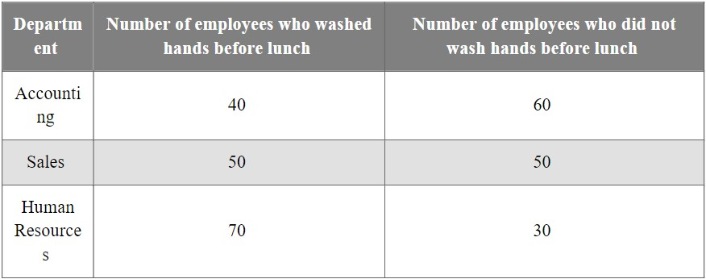
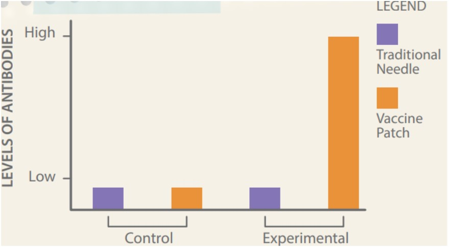
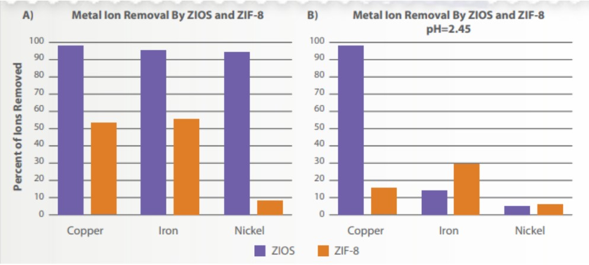

Question 1
D’Andre completed his sampling and recorded his results in a table:
Handwashing Survey
D’Andre notices a lot of employees in his 2,000-person office are getting sick. He knows that some diseases can be prevented by using appropriate sanitation methods.
D’Andre decides he wants to survey employees in his office building and ask how many of them wash their hands before they eat lunch. He also wants to see if handwashing frequency is the same across all departments, or if certain departments tend to wash their hands more than others.
Question 2
We have developed a new method for delivering vaccinations that doesn’t require a needle. Instead, a small patch with the vaccine on it can be placed on the skin. We wanted to find out how effective our vaccine patch was compared to a traditional needle. We used 4 groups of mice. One group received the vaccine patch with the COVID-19 vaccine on it. The second group received a traditional needle vaccination. The third and fourth groups were groups, receiving either a needle injection or patch that had no vaccine in it. The results are shown in the graph.
Question 3
Copper is one of the most widely used heavy metals. Copper is a metal that our bodies need in small amounts, but it becomes toxic at high levels. Many rivers and streams contain copper because many industries use this metal. We created ZIOS, a new supramolecular structure that adsorbs copper ions. Once we created ZIOS, we tested how well it adsorbed copper ions. We also tested a different copper adsorbent, known as ZIF-8. We placed both ZIOS and ZIF-8 in a solution with initial copper ion levels of 425 parts per million (ppm). After 30 minutes, ZIOS had reduced the copper levels to less than 1.5 ppm, while ZIF-8 had dropped the levels to about 42 ppm. After 75 minutes, the copper concentration in the solution with ZIOS was still less than 1.5 ppm, but the levels for ZIF-8 had increased to 115 ppm. Results are shown in the following graph.
Question 4
Windchill is the rate of heat loss on the human body resulting from the combined effects of low temperature and wind. As wind speeds increase, heat is carried away from the body at a faster rate, thus lowering both the skin temperature and, ultimately, the internal body temperature. Many other factors can affect the impact of windchill, such as type of clothing worn, the amount of flesh exposed, and an individual's physical condition.
Question 5
Scientists today are studying tidal power as an alternative energy source for generating electricity. Some scientists conclude that tidal power is a good alternative source of energy because it uses a natural process, does not rely on fossil fuels, and does not release greenhouse gases. These scientists recommend building tidal power plants around the United States in locations with high tidal power potential. Other scientists conclude that tidal power is not a good alternative energy source because tidal power plants can negatively impact the surrounding ecosystem by killing marine animals, restricting fish migration, reducing the natural flow of water, and causing silt buildup in waterways. These scientists recommend not building tidal power plants in U.S. waterways. Both conclusions are based on valid data and scientific reasoning.
1. What can he conclude from these results?
2. What is the conclusion of this experiment?
3. What is the conclusion?
4. Based on the information provided, which of these practices would BEST protect a person from the damaging effects of windchill on a severe day?
5. How can both conclusions be valid?